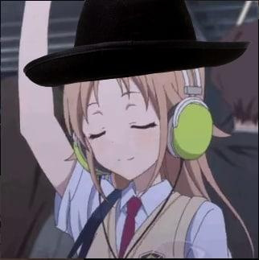

Лабораторна робота №2
Виконав Левицький Ярослав. Студент групи КІ-43. Пошта: Yaroslav.Levytskyi.KI.2018@lpnu.ua. Номер телефону: +380969286361.
Короткий опис гри
«S.T.A.L.K.E.R. 2: Серце Чорнобиля» (англ. S.T.A.L.K.E.R. 2: Heart of Chernobyl) — відеогра в жанрі постапокаліптичного шутера, яку розробляє українська компанія GSC Game World. Вона має стати продовженням культової серії ігор S.T.A.L.K.E.R.. Реліз гри заплановано на 28 квітня 2022 року, ексклюзивно на приставках нового покоління від Microsoft Xbox Series X/S, а також Windows.
Історія розробки
Другу частину почали розробляти одночасно зі «S.T.A.L.K.E.R.: Поклик Прип'яті» 2009 року. Офіційний анонс відбувся 13 серпня 2010 року, а вихід гри планували на 2012 рік. 9 грудня 2011 року Сергій Григорович призупинив розробку гри й 10 грудня розпустив команду. 25 квітня 2012 колишні розробники GSC Game World оголосили про створення нової компанії Vostok Games, анонсувавши свій новий проєкт — free-to-play MMO-шутер Survarium. На момент згортання розробки гри її рушій був готовий на 70—80 %, а також було зроблено декілька ігрових рівнів та персонажів. 12 грудня 2012 року компанія bitComposer оголосила про купівлю прав на створення комп'ютерних ігор на основі бренду S.T.A.L.K.E.R.. Того ж дня GSC Game World спростувала цю інформацію, підтвердивши, що всі права на гру належать компанії в особі Сергія Григоровича.
Гіперпосилання на інші ігри серії
Офіційні сайти:
Лабораторна робота №3
Лабораторна робота №4


|